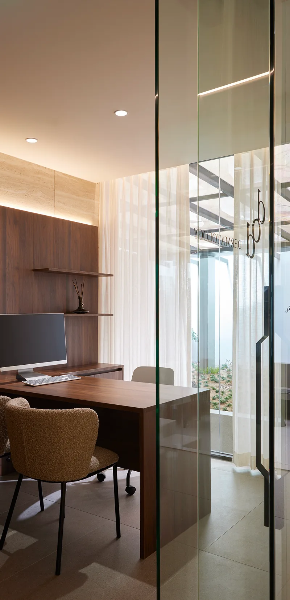

01 / 03
살펴보다
MetaVu 진단 시스템을 안내합니다. 피부 상태와 관심 부위를 의료진과 함께 살펴봅니다.

02 / 03
이야기하다
관심 부위와 이전 시술 이력, 일정을 바탕으로 진료 방향을 상담합니다.

03 / 03
확인하다
진료 분야별 안내를 읽고, 나에게 필요한 질문을 준비합니다.
시술 선택과 적용 여부는 의료진 상담이 필요합니다.
입체 오브젝트는 브랜드 그래픽입니다.
Medical Staff & Research
진료를 함께할
의료진과 연구진

| 01 | 이준 | 대표원장 |
|---|---|---|
| 02 | 안정식 | 원장 |
| 03 | 황승경 | 원장 |
| 04 | 이준원 | 원장 |
| 05 | 김진아 | 박사 · 연구진 |
Before Consultation
상담 전에
준비할 질문
입력하거나 저장하는 곳은 없습니다. 상담 때 의료진에게 직접 이야기해 주세요.
- Q1가장 궁금한 부위나 변화는 무엇인가요?
- Q2이전에 받은 시술과 시기는 언제인가요?
- Q3회복과 일정에서 고려할 점이 있나요?
- Q4복용 중인 약과 알레르기는 의료진에게 직접 알려 주세요.
Contact
진료 문의
Call02-6203-6263
Kakao카카오톡으로 문의
Hours
- 월–목
- 10:00–19:00
- 금
- 10:00–21:00
- 토
- 10:00–16:00
- 휴게(월–금)
- 13:00–14:00
일요일·공휴일은 병원에 확인해 주세요.